最近、北アルプスにどっぷりハマってしまった私です。今回は比較的アクセスしやすく、初心者でも挑戦しやすいと評判の「北アルプスの女王」燕岳（つばくろだけ、2,763m）に1泊2日で挑戦してきました。
結論から言うと、辛い登山道を乗り越えた先に待っている絶景は本当に素晴らしく、燕山荘での宿泊体験も含めて最高の山行となりました。特に表銀座コースから見る槍ヶ岳の雄姿は圧巻でした。
動画で見る燕岳登山¶
今回の登山の様子を動画でまとめましたので、まずはこちらをご覧ください。記事では伝えきれない山の雰囲気や絶景を感じていただけると思います。
事前準備：駐車場予約で冷や汗¶
登山前日、実は大きな問題が発生していました。燕岳登山口である中房温泉の駐車場事情を甘く見ていたんです。
当日の朝になって慌てて調べてみると、なんと中房温泉の駐車場は予約制で、タイムズの予約システムで1日3,000円。しかも夏の週末ということで、かなり埋まってしまっている状況でした。
ギリギリのタイミングでなんとか1台分確保できましたが、本当に冷や汗ものでした。北アルプスの人気コースを甘く見てはいけませんね。皆さんも燕岳を計画される際は、必ず事前の駐車場予約をお忘れなく！
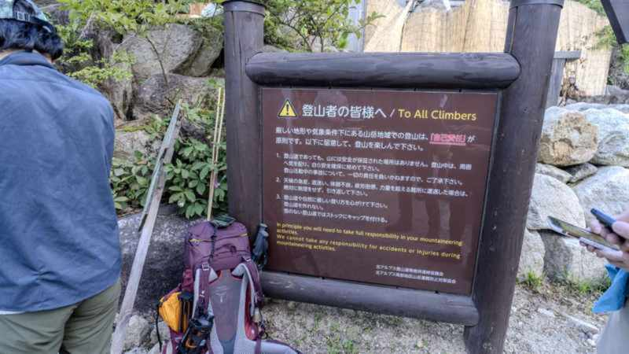 早朝の中房温泉駐車場。この時点でワクワクが止まりません
登山開始：心が折れそうな階段地獄¶
朝6時40分、中房温泉の登山口から登山開始です。燕岳への登山道は「合戦尾根」というルートで、序盤から中盤にかけては階段の連続。しかも樹林帯なので景色もほとんど変わらず、正直なところ単調でした。
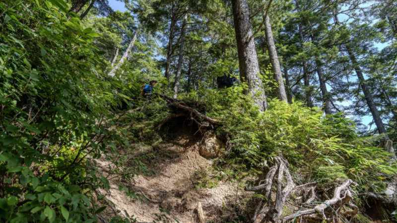 ひたすら続く階段。この時点では「なんでこんなに辛いんだ...」と心が折れそうに
 延々と続く樹林帯。景色の変化がなくて、精神的にもきつかったです
延々と続く樹林帯。景色の変化がなくて、精神的にもきつかったです
ただ、登山は辛いことばかりではありません。途中でようやく視界が開ける場所に到着し、遠くに北アルプスの山々が見えてきた時の感動は今でも忘れられません。
稜線到達：別世界への扉が開く瞬間¶
合戦小屋を過ぎ、樹林帯を抜けて稜線に出た瞬間、それまでの辛さが一気に吹き飛びました。目の前に広がったのは、まさに別世界の絶景。
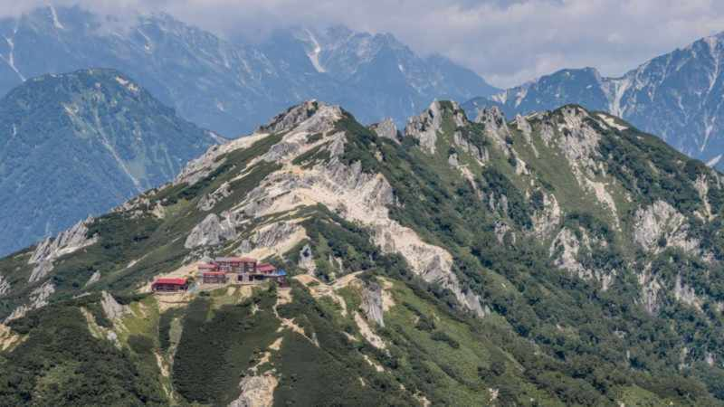 ドローンから撮影した表銀座の稜線。この景色を見た瞬間、すべての辛さが報われました
特に印象的だったのが、表銀座コースの向こうに堂々とそびえる槍ヶ岳の姿です。あの特徴的な槍の穂先が、雲一つない青空にくっきりと浮かんでいる様子は本当にかっこよくて、しばらく見とれてしまいました。
 稜線での昼食休憩。この景色を見ながらの食事は格別でした
稜線での昼食休憩。この景色を見ながらの食事は格別でした
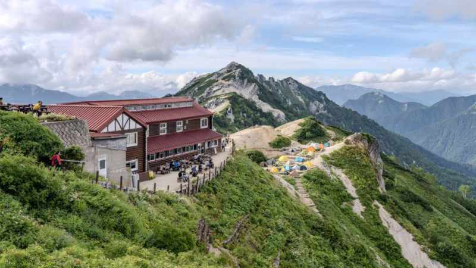 午後の太陽に照らされた北アルプスの山々。光と影のコントラストが美しい
燕山荘到着：山小屋とは思えない快適さ¶
夕方、ついに本日の目的地である燕山荘に到着しました。事前に「燕山荘は山小屋とは思えないほど設備が整っている」という話は聞いていましたが、実際に体験してみると本当にその通りでした。
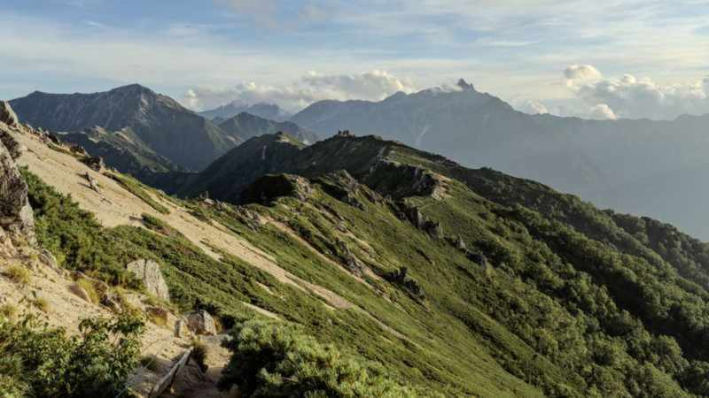 夕日に照らされる燕山荘。この時間の景色は本当に幻想的でした
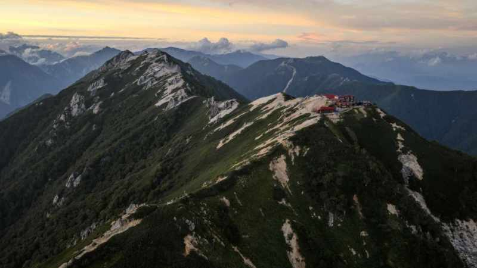 夕方のドローン撮影。燕山荘と燕岳の美しいシルエット
燕山荘で特に印象的だったのは、スタッフの方々の丁寧な対応と、他の山小屋ではよくある「いびき問題」がほとんどなかったことです。多くの山小屋では大部屋で雑魚寝となり、隣の人のいびきで眠れないなんてことがよくありますが、燕山荘では比較的快適に眠ることができました。
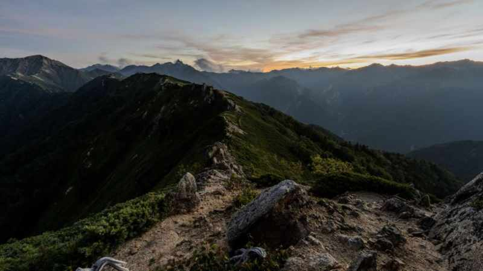 燕山荘での夕食風景。山小屋とは思えない豊富なメニューに感激
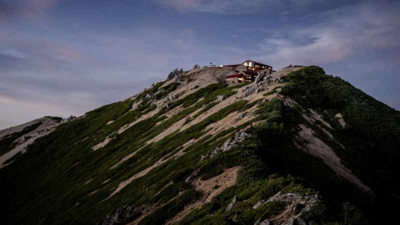 夕食後、他の登山者の方々との語らいも山小屋泊の楽しみの一つ
星景撮影：半月の難しさを痛感¶
日が沈んだ後は、お楽しみの星景撮影タイムです。ただ、この日は半月だったため、月明かりが明るすぎて思うような星景写真が撮れないという問題がありました。
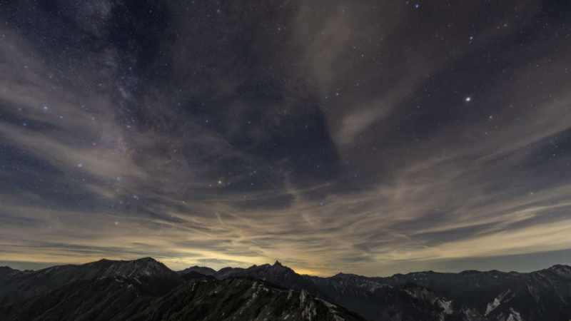 半月の夜空。星はそれなりに見えますが、写真撮影には少し厳しい条件でした
星景撮影を本格的にやるなら、やはり新月期を狙うべきだと改めて実感しました。とはいえ、標高2,700m近い稜線から見上げる夜空は、都市部では絶対に見ることのできない美しさがありました。
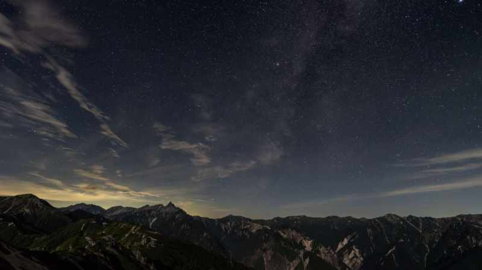 深夜1時過ぎの星空。時間が遅くなるにつれて、月も傾いてより多くの星が見えるように
朝の絶景：感動のご来光タイム¶
翌朝は4時30分に起床し、ご来光を見るために燕岳山頂付近へ向かいました。早朝の山の空気は本当に清々しく、徐々に明けていく空の色の変化を楽しむことができました。
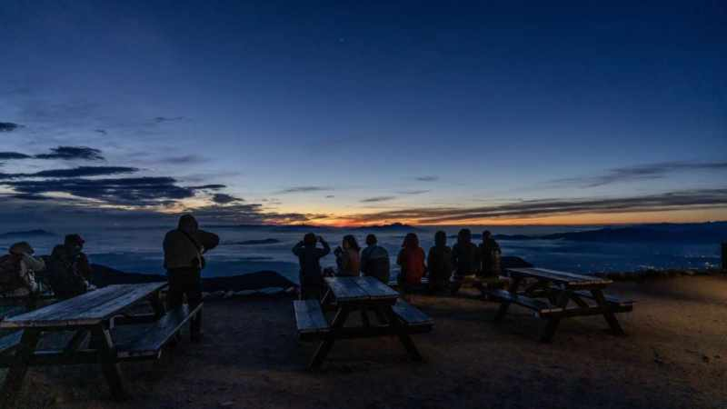 夜明け前の静寂な瞬間。この時間帯の山は本当に神秘的です
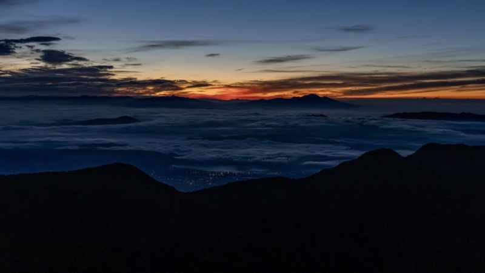 朝焼けに染まる北アルプスの山々。この瞬間のために早起きした甲斐がありました
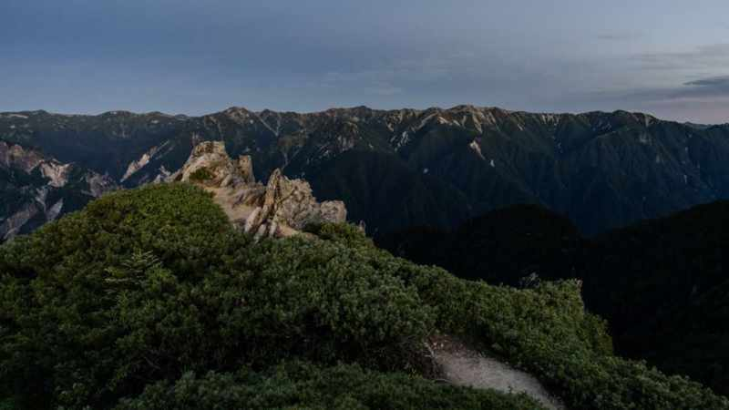 ついに太陽が顔を出した瞬間！この感動は言葉では表現できません
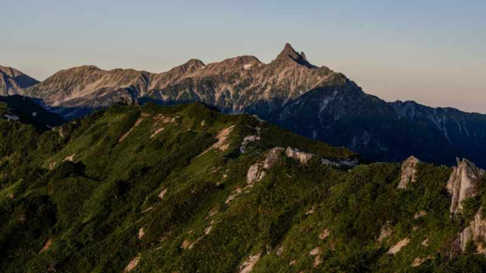 朝日に照らされた槍ヶ岳。改めてその美しい姿に見とれてしまいました
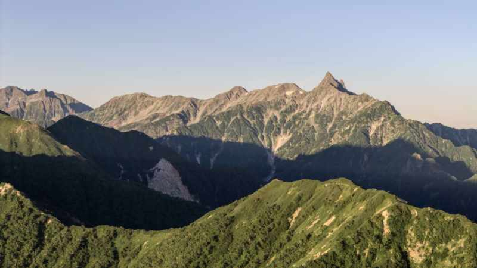 朝のドローン撮影。この時間の光は本当に美しく、撮影には最高の条件でした
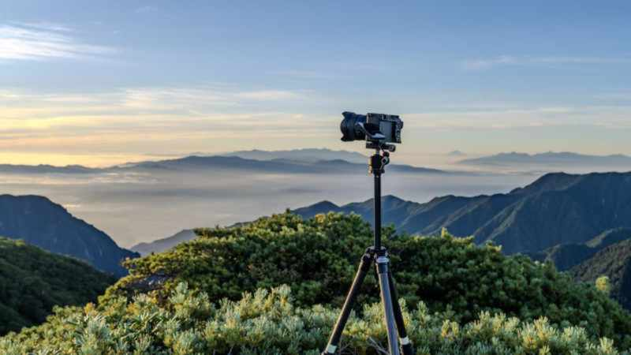 下界には雲海が広がり、まさに雲の上の世界。山登りの醍醐味を堪能
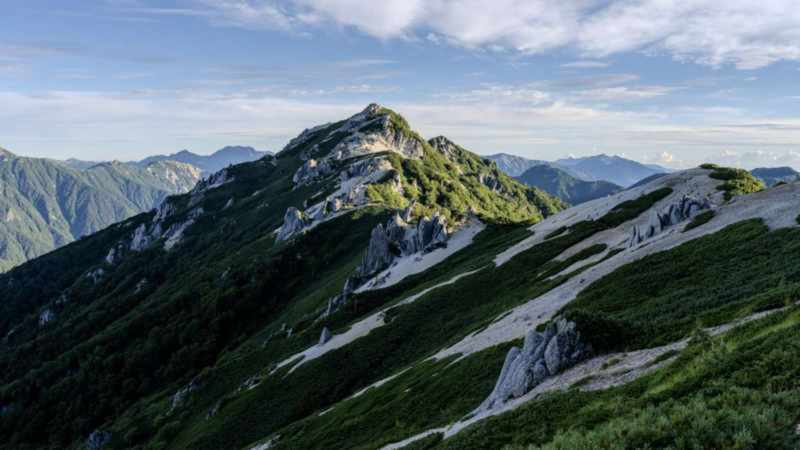 燕岳山頂付近の花崗岩の巨岩。この独特の景観も燕岳の魅力の一つです
下山：疲労との戦い¶
朝の絶景を十分に堪能した後は、いよいよ下山開始です。正直なところ、この時点で足にはかなりの疲労が蓄積していて、「早く下りたい」という気持ちが先行していました。
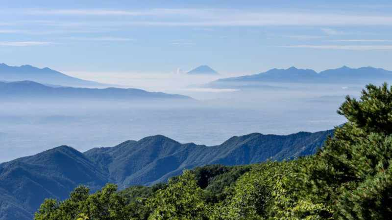 下山前の燕山荘。名残惜しいですが、現実に戻る時間です
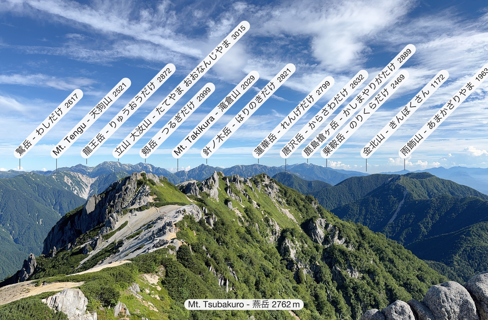 下山途中で振り返った燕岳。「また来るからね」という気持ちを込めて
下山は想像以上に大変で、特に膝への負担が重く、途中で何度も休憩を取りながらの下山となりました。上りの時には気付かなかった足元の岩や根っこが、疲れた状態では結構な障害に感じられるんですね。
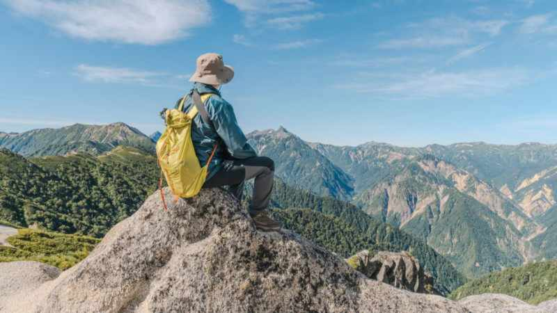 駐車場に戻る前の最後の燕岳。本当にお疲れさまでした
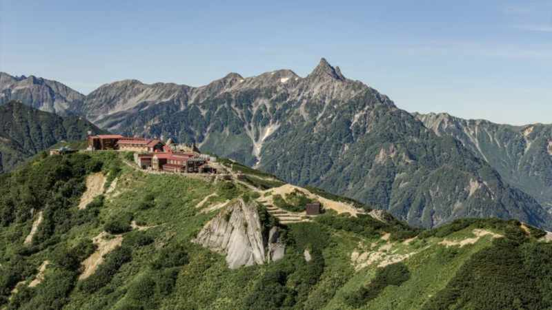 下山完了後の最後のドローン撮影。達成感と共に、次回への意欲も湧いてきます
まとめ：北アルプス入門に最適な山¶
今回の燕岳登山を振り返ると、確かに序盤の階段地獄は辛かったですが、それを乗り越えた先に待っている絶景は本当に素晴らしいものでした。特に表銀座コースから望む槍ヶ岳の姿は、一生忘れることのできない景色だと思います。
燕山荘の快適な設備とスタッフの方々の丁寧な対応も、山小屋泊初心者にとっては心強く、北アルプス入門の山としては本当におすすめできます。
個人的には、次回はもう少し体力をつけてから、表銀座コースを大天井岳まで縦走してみたいなと思っています。北アルプスの魅力にどんどんハマっていく自分がいます。
皆さんも機会があれば、ぜひ燕岳の素晴らしい景色を体験してみてください。ただし、駐車場の予約だけは本当にお忘れなく！
この記事が、燕岳登山を検討されている方の参考になれば嬉しいです。